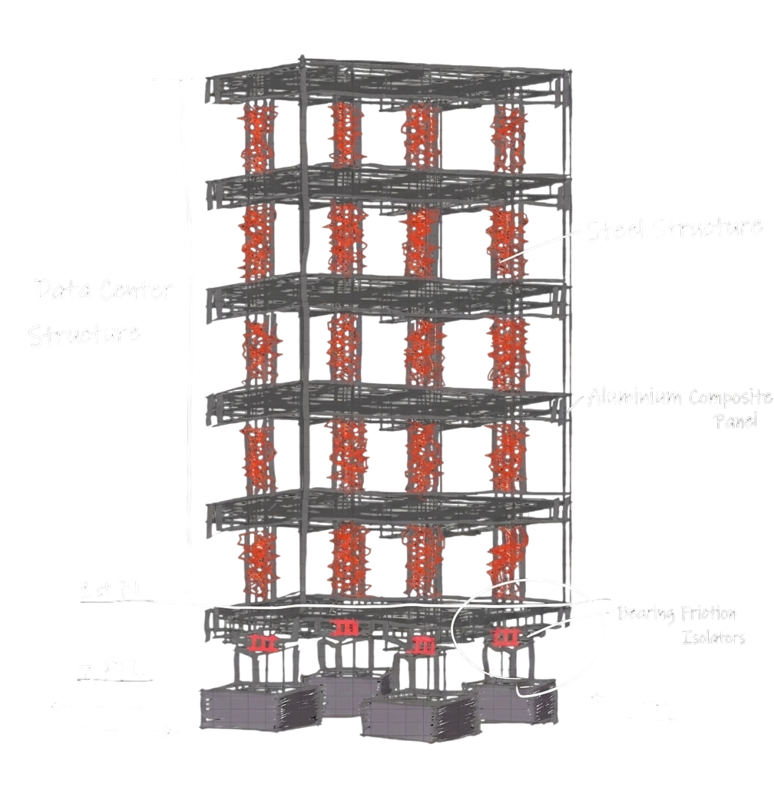
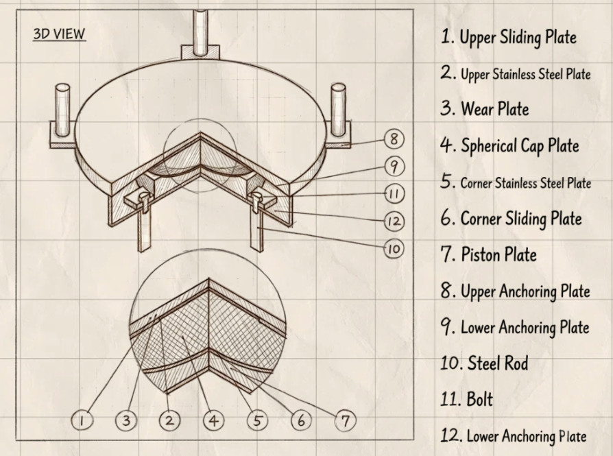
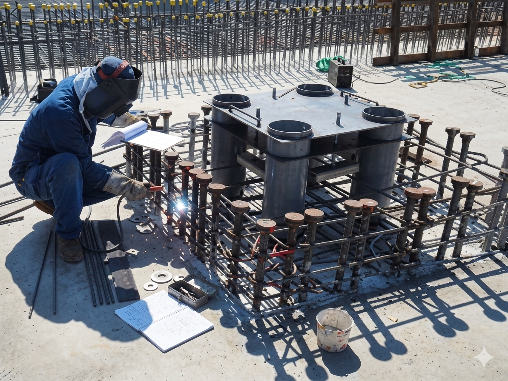
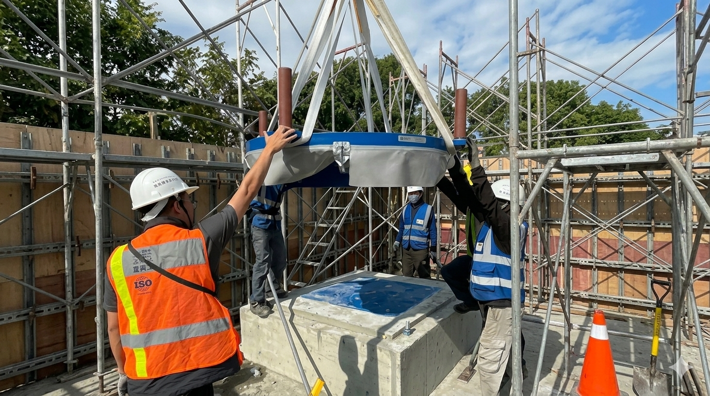
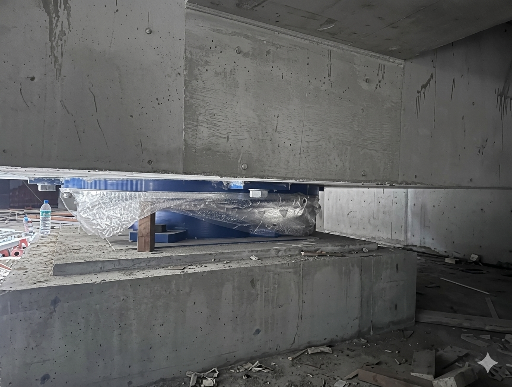
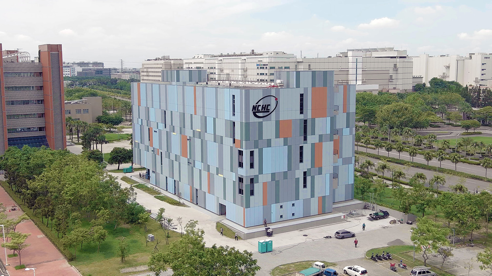

Phase 01 / The Blueprint
Absolute stability on unstable ground.
It all begins with an architectural vision and a profound respect for the restless Earth.
Phase 02 / The Core Location
The pivot between change and eternity.
Seismic isolation systems absorb uncertainty, ensuring uninterrupted operations.
Phase 03 / The Precision
The shock absorber of civilization.
Every layer of precision engineering is designed to safeguard order amidst chaos.
Phase 04 / The Manifestation
Ground moves, system runs.
From manuscript to reality, we etch a sense of security deep into the ground.
Phase 05 / The Uninterrupted Flow